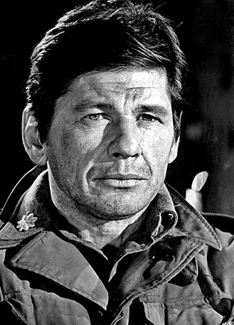

Donald Trump
from Wikipedia

Benjamin Netanyahu
from Wikipedia
Ennio Morricone
from Wikipedia

Charles Bronson
from Wikipedia
・ BGM Selection
・ Gabriel's Oboe — Ennio Morricone（映画「ミッション」1986より）
・ 再生リスト（選定中）
・ 映画断片を含む：先住民の前でオーボエを吹く宣教師の場面
・ → その後、オーボエが折られる
・ 象徴：音楽（希望・対話の媒体）が暴力によって物理的に断たれる
・ しかし旋律は残る = 「折られても消えない何か」
・ テーマ：混乱した世界を経済学的視点から捉えなおす
■ 今回 5/7 の話題（準備メモ）
|
Donald Trump from Wikipedia |
Benjamin Netanyahu from Wikipedia |
Ennio Morricone from Wikipedia |
 Charles Bronson from Wikipedia |
■ 前回からの問題意識の変化
・ これまでのフレーム ・ 「変質社会主義 vs 民主主義・法の支配」という対比軸 ・ プーチン・習近平 → このフレームで整理できた ・ フレームの崩壊 ・ トランプ＆ネタニヤフ問題 → 基準軸そのもの（民主主義・法の支配）が揺らいでいる ・ 「変質社会主義」への批判に使っていた基準を、民主主義の側が自ら壊している ・ → 「何を基準に考えればいいのか」という根本問題■ 今回の別のアプローチ候補
・ 視点１：コスト外部化の構造（経済学的軸） ・ 体制の違いに関わらず使える分析軸 ・ プーチンのウクライナ侵攻 → コストはウクライナ市民・欧州・地球環境へ ・ ネタニヤフのガザ・イラン攻撃 → コストはガザ市民・中東全体・国際秩序へ ・ トランプの関税・同盟破壊 → コストは同盟国・将来世代・グローバル経済へ ・ → 「誰がコストを負担するか」は体制を問わず問える ・ → 本荘 2019 論文（雇用・マクロ）の視点からこの構造をどう見るか？ ・ 視点２：峰不二子から入る（sympathy の条件） ・ Rinko さん（Angels）の動画：ルパン三世「ラヴ・スコール」カバー（2026-05-02公開） ・ 〜峰不二子のテーマ〜 / Sandra Horn Band cover ・ 動画リンク ・ Angels チャンネル ・ 峰不二子 = 「制度の外側に正直にいる存在」 ・ 国家・法・組織に縛られない。ルパンにさえ平気で裏切る ・ しかし**自分自身の美学と一貫性**がある ・ 「私は何者か」が明確 ・ 欲望に正直で偽善がない ・ 裏切るときも「不二子らしい理由」がある ・ → 観客は sympathy を感じられる：彼女の内面の論理が**読める**から ・ Adam Smith TMS との接続 ・ sympathy の前提 = 相手の内面の論理が想像できること ・ 不二子は「嘘をついても嘘つきではない」= 内的一貫性がある ・ → 制度の外にいても sympathy は成立する ・ 現実の世界指導者との対比
| 人物 | 制度との関係 | 内的一貫性 |
|---|---|---|
| 峰不二子 | 制度の外に正直にいる | ある |
| トランプ | 制度の内側にいながら壊す | ない |
| ネタニヤフ | 制度を利用しながら破壊 | ない |
・ トランプ・ネタニヤフ = 「民主主義を語りながら民主主義を壊す」
・ その場その場で変わる → 内面の論理が読めない → sympathy が生まれない
・ → 「制度が機能しないとき、人は何に信頼の根拠を置くか」という問い
・ 自治会会計問題との接続（ミス vs 意図的遮断の分岐）
・ 3件の不正疑義（山村修平氏、2026-05-06連絡書）
a) 集会所鍵修理代16,500円の費目処理ミス
→ 理解不足によるミス → sympathy は成立する（意図がない）
b) 交際費10,518円（証拠書類なし）
c) 募金送金21,400円（証拠書類なし）
→ b・c は意図的な可能性
→ Adam Smith TMS：impartial spectator（内なる公正な観察者）の声が
聞こえているが従わない選択 = sympathy の「機能不全」ではなく「意図的キャンセル」
・ ミスと故意の分岐 = sympathy の根拠と崩壊の分岐点
・ ミス → 当人の視点から見えていなかった → 想像で補える → sympathy 成立
・ 故意 → 声が聞こえているのに聞かない → 想像の余地がない → sympathy 崩壊
・ プーチン・ネタニヤフとの構造的類比（スケールは異なる）
・ 違法・違反の認識 ＋「自分には理由がある」= impartial spectator の声の意図的キャンセル
・ これが sympathy を不可能にする本質
・ 視点３：Ennio Morricone の２曲
・ 「Once Upon a Time in the West」
・ 前回（2026-04-02）のBGMとして使用
・ チェロとヴォカリーズによるカバー版（YouTube で偶然発見して採用）
・ 後から判明したこと
・ セルジオ・レオーネ監督の西部劇「ウエスタン」（1968）のメインテーマ
・ Ennio Morricone（1928-2020）の作曲
・ 世界中の多くの演奏家によってカバーされている
・ 「Gabriel's Oboe」（ガブリエルのオーボエ）
・ 映画「ミッション」（The Mission, 1986）よりMorricone作曲
・ Once Upon a Time in the West の流れで発見し、気に入った
・ ２曲の対比（同じ作曲家、異なる世界）
| 対比軸 | Once Upon a Time in the West | Gabriel's Oboe |
|---|---|---|
| 世界 | 法なき辺境（西部） | 制度の内側（教会・植民地） |
| 暴力の性格 | 剥き出し・可視的 | 制度に包まれた暴力 |
| sympathy の向かう先 | 荒野に消える命 | 理想を抱いて滅びる者 |
・ 共通点：どちらも「美しさの中に喪失がある」
→ Morricone の技法：暴力・死・敗北を美しく聴かせる
→ これ自体が sympathy の問い：悲しいものが美しく聴こえるとき、何が起きているか
・ 今回の対話での位置づけ
・ 本荘さんは「Once Upon a Time in the West」を知らなかった
→ 背景（レオーネ、1968年、Morricone）を含めて紹介し、２曲を鑑賞する
・ YouTube で人気の理由（これまでの私の理解）
・ Charles Bronson が駅で３人に迎えられる冒頭シーン
・ 「馬を連れてきたよ」→「２頭多い（You brought two too many）」
→ 自分は生き残り、３人とも倒す、という意味
→ 余分な言葉を一切省いた「すでに決まっている男」の静けさ
・ YouTube のコメント欄を共感が埋める = この「静かな必然性」へのシンパシー
・ 「敗者の曲」という読みは新しい解釈
・ シーン単体では「勝者の美学」に見える
・ しかし映画全体・音楽が載せているのは「消えゆく西部」への哀惜
・ Bronson 自身も「復讐を果たして去る者」= 勝者ではなく、喪失の側にいる
・ → 同じ作品が「カッコよさ」と「哀惜」の両面を持つ = Morricone の技法の核心
・ 対話テーマとの接続（候補）
・ 「静かな必然性」= impartial spectator が声を発する前に、すでに結果が見えている状態
・ Bronson のセリフの「経済性」→ 本荘 2019 論文の効率・均衡の話への橋渡し？
・ （雑談を続けて整理予定）
・ 対話構成の候補
1. Rinko さんの動画 → 「なぜこれに心が動くか」
2. 峰不二子 → 「制度外の行動者」への sympathy の条件
3. ミス vs 意図的遮断 → sympathy の根拠と崩壊の分岐点（自治会↔世界指導者）
4. Morricone と西部劇 → （整理予定）
5. 経済学的軸（コスト外部化）へ
・ 未整理の問い
・ （雑談を続けて追記）
■ 世界情勢スナップショット（2026-05-07）
・ （当日の状況を追記）
・ 参照
・ 本荘 2019 論文（雇用・マクロ経済）
・ Adam Smith TMS 研究メモ
・ 前回 2026-04-02（輪番制・コミュニケーション・ギャップ）
・ Dialogs with Professor Y. H.